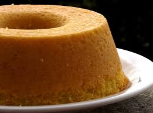

Bolo de coco

Ingredientes
- 3 xicaras de farinha
- 2 xicaras de açúcar
- 4 ovos
- 1/2 colher cha de sal
- 200g de manteiga em temperatura ambiente
- 1 xicara de leitede coco
- 2 colher de fermento em po
- 1 xicara de leite de coco
- 80g de coco raado.
Modo de Preparo
- Aqueca o forno a 180 graus
- bata a manteiga ate clarear
- Junte o acucar e bata ate misturar
- Acrescente os ingredientes secos intercalando com leite de coco
- Por último acrescente o coco ralado, misture delicadamente e transfira para uma fôrma grande
- Leve para assar ate passsar no teste do palito.